M.S. Researcher, Mechanical and AI Lab, Carnegie Mellon University
I build machine-learning models for physics simulation: neural surrogates that predict fluid flow in seconds, and AI agents whose results are accepted only when they pass physics checks. I'm applying to PhD programs for Fall 2027 to study how scientific ML models generalize across physical systems, and how we can trust them.
Neural PDE surrogatesOperator learningCross-domain generalizationAgentic AI for simulationComputational fluid dynamics
CFD Forge was cited in FoamGPT (Wang et al., RPI), which highlights its use of deterministic physics checks, rather than the model, to accept simulation results.
Co-authored preprint on an open library of AI agent skills for mechanical engineering is out on arXiv.
First-author preprint CFD Forge, a physics-checked LLM agent for autonomous CFD, is out on arXiv.
Applying to PhD programs for Fall 2027 entry.
Joined the Mechanical and AI Lab (MAIL) at CMU, advised by Prof. Amir Barati Farimani.
Publications
Preprints
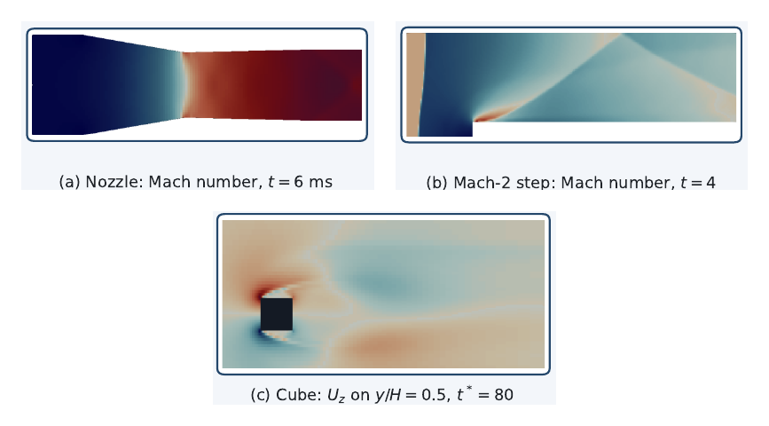
CFD Forge: A Physics-Constrained Agentic Framework for Autonomous CFD
A. S. Oza, R. F. Johnson, A. Barati Farimani
arXiv:2610.14104, 2026 First author
An LLM agent turns plain-language flow requests into OpenFOAM simulations, but only deterministic physics checks can accept a result. A model judging alone accepted 12 of 13 planted faults; CFD Forge's checks accepted none.
@article{oza2026cfdforge,
title = {CFD Forge: A Physics-Constrained Agentic Framework for Autonomous CFD},
author = {Oza, Aakash Shailesh and Johnson, Ryan F. and Barati Farimani, Amir},
journal = {arXiv preprint arXiv:2610.14104},
year = {2026}
}
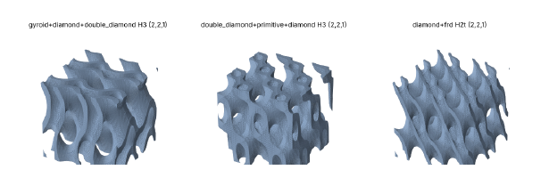
Mechanical Engineering Skills: An Open Library of Agent Skills for Design, Analysis and Manufacturing
A. Chandrasekhar, J. Barkley, P. Pak, R. Loghmani, A. S. Oza, A. Barati Farimani
arXiv:2611.05758, 2026
An open library of 33 agent skills that lets an AI agent carry out mechanical-engineering tasks across design, analysis and manufacturing, returning results together with their checks.
@article{chandrasekhar2026meskills,
title = {Mechanical Engineering Skills: An Open Library of Agent Skills for Design, Analysis and Manufacturing},
author = {Chandrasekhar, Achuth and Barkley, Jesse and Pak, Peter and Loghmani, Rumi and Oza, Aakash and Barati Farimani, Amir},
journal = {arXiv preprint arXiv:2611.05758},
year = {2026}
}
Research & Projects
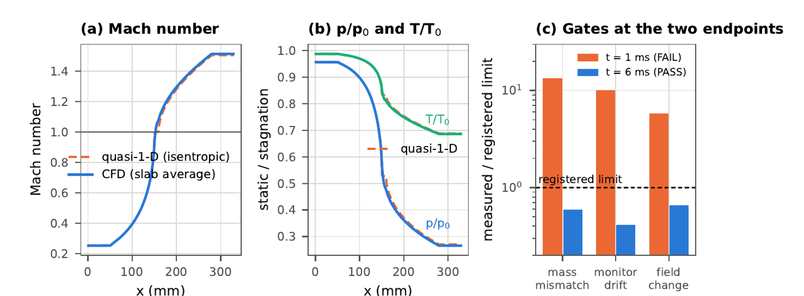
Supersonic nozzle: CFD matches quasi-1D theory (a, b); three physics gates failed at 1 ms and passed after the agent's approved continuation to 6 ms (c).
CFD Forge: Physics-Checked AI Agent for CFD
First author · MAIL, CMU · Aug 2026–present
LLM agentsOpenFOAMGmshPython
An AI agent that runs CFD simulations from a plain-language request, where the language model proposes but only physics-based checks can accept a result.
Key result: nozzle results matched quasi-1D theory within 2%. On planted faults, an LLM judging alone accepted 12 of 13 bad runs; CFD Forge accepted none.
Details
Problem
A wrong simulation that looks right can steer an engineering design off course, and LLMs are not reliable judges of scientific results.
Approach
The agent sets up and runs each OpenFOAM case. Deterministic physics checks accept or reject it, and rejected runs get a bounded set of corrective actions before rerunning. Demonstrated on supersonic nozzle and Mach-2 forward-facing-step flows.
Lesson
Language models alone can't be trusted to judge scientific results, but grounding them in physics checks makes them reliable.
My role
Built the agent, physics checks and correction loop; ran all experiments; first author.
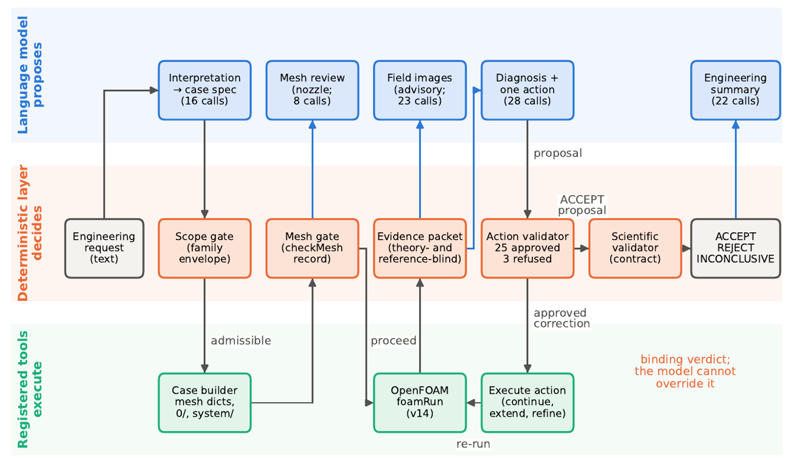
The agent loop as implemented: the language model proposes (blue), a deterministic layer decides (orange), and registered tools execute (green). Call counts are from the 19 archived sessions; the scientific validator's verdict is binding and the model cannot override it.
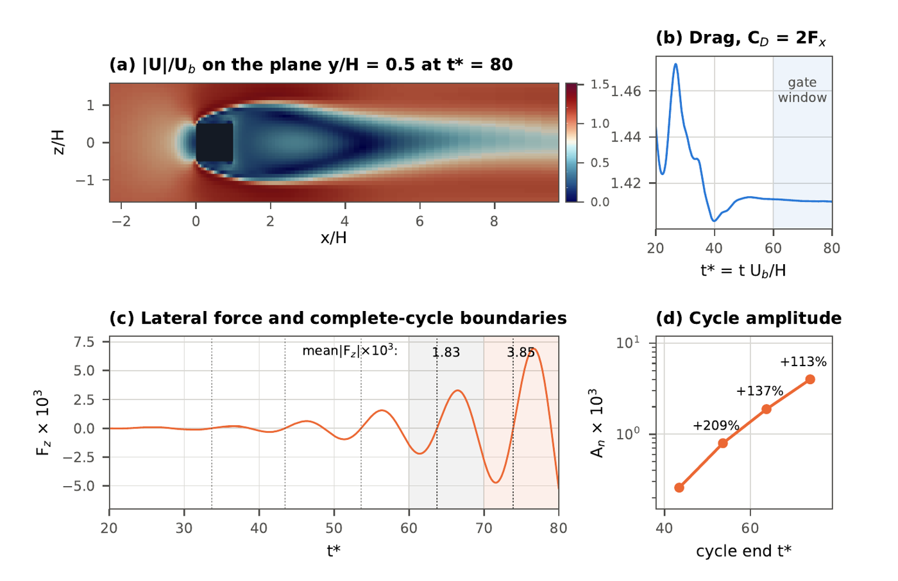
Turbulent cube diagnostic (outside the agent loop): drag looks settled (b) while the lateral force keeps growing cycle after cycle (c, d). A converged-looking plot is not a converged solution, so steady state is checked explicitly.
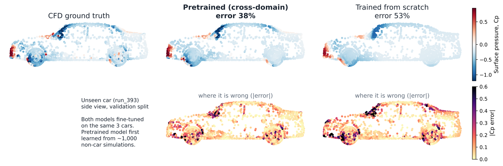
Unseen car, both models fine-tuned on the same 3 cars: the pretrained model recovers the windscreen suction peak the from-scratch model misses (38% vs 53% error).
Cross-Domain Pretraining for Few-Shot CFD Surrogates
MAIL, CMU · Aug–Oct 2026 · Manuscript in preparation
PyTorchAB-UPT transformer (75M)OpenFOAM · SU2 · Fluent data
High-fidelity CFD is expensive, so most design problems have only a handful of simulations. I pretrained a transformer surrogate on about 1,000 non-car simulations from different solvers and flow types, then fine-tuned it on just 3 to 15 cars.
Key result: up to 40% lower error on unseen cars than a fully tuned from-scratch model; 3 pretrained cars beat 5 cars from scratch.
Details
Problem
Neural CFD surrogates need many expensive simulations, and most engineering problems don't have them.
Approach
Unified data from different solvers and outputs (field-ID tokens, inflow-based nondimensionalization) so incompressible bluff bodies and compressible delta wings could be pretrained together, then fine-tuned on DrivAerML cars.
Lesson
Relevance matters more than volume: related flows helped, while a mismatched submarine-wake dataset made predictions worse.
My role
Built the pipeline and ran all experiments and analysis, developing the idea with my lab mentor.
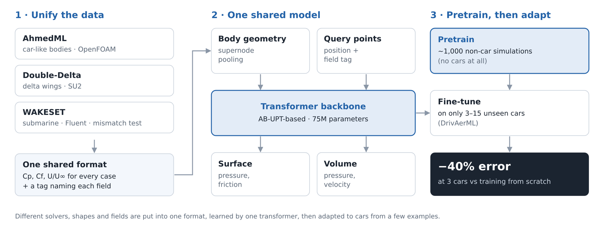
Pipeline: three solvers and geometry families (AhmedML/OpenFOAM, Double-Delta/SU2, WAKESET/Fluent) are put into one format (Cp, Cf, U/U∞ plus a field tag), learned by one AB-UPT-based transformer (75M parameters) that predicts surface and volume fields, then fine-tuned on 3–15 unseen cars.
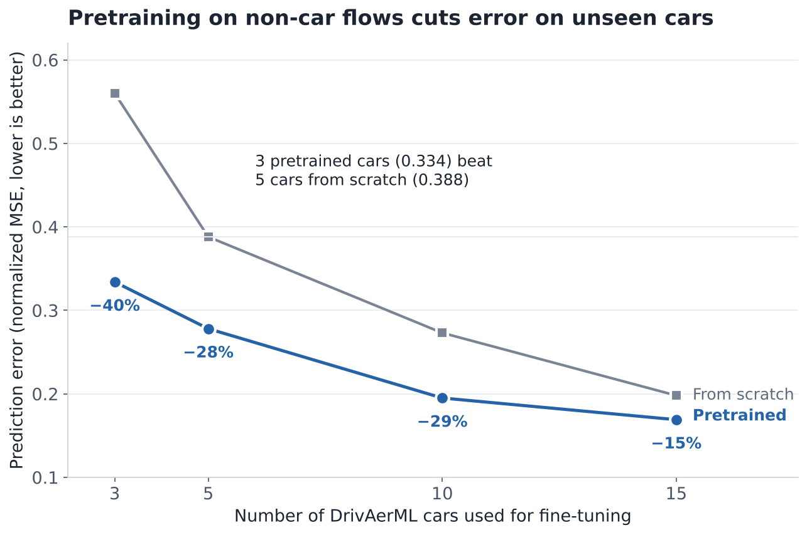
Error on unseen cars vs. number of training cars: pretraining cuts error by 40% / 28% / 29% / 15% at 3 / 5 / 10 / 15 cars.
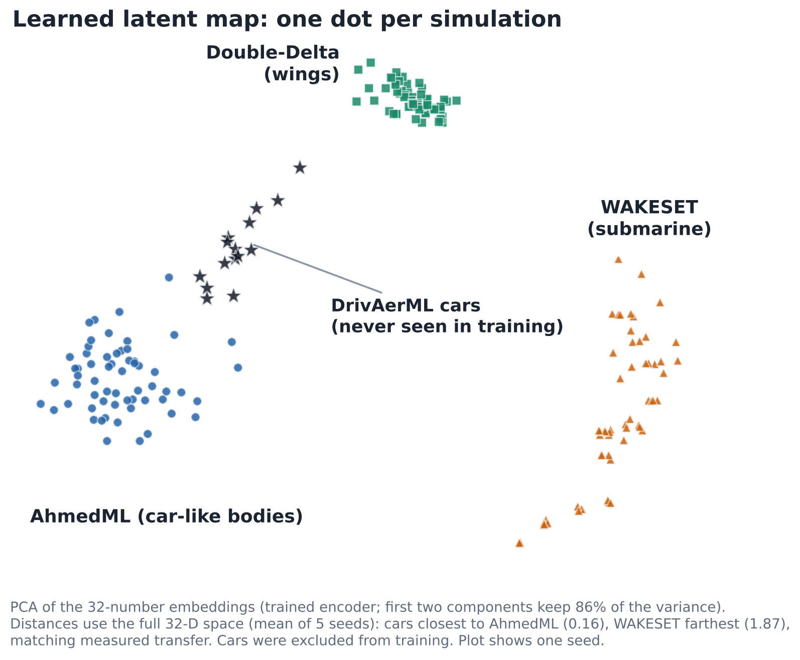
Each dot is one simulation compressed to 32 numbers. Unseen cars sit near AhmedML and Double-Delta (which helped transfer) and far from WAKESET (which hurt).
A Learned Map for Choosing Training Data
MAIL, CMU · 2026 · Ongoing
Encoder–decoderDataset embeddingsData selection
Can we tell which simulations will help before paying to run them? An encoder–decoder compresses each simulation into a 32-number fingerprint, and distances between fingerprints are compared with measured transfer.
Key result: the trained encoder ranks the harmful dataset (WAKESET) farthest from the cars across 5 seeds, matching measured transfer; an untrained copy of the same network does not.
Details
Problem
Each high-fidelity simulation costs hours, so choosing which ones to run is itself a learning problem.
Approach
Train one encoder–decoder on all datasets, keep the target cars out of training, and measure distances in the learned 32-D space.
Next
Use these distances to decide which simulations to run before running them.
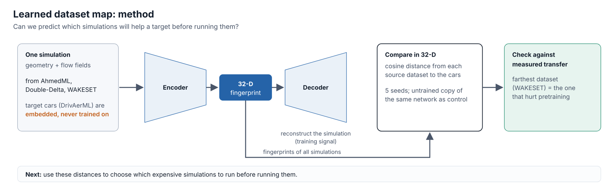
Method: an encoder–decoder compresses each simulation into a 32-D fingerprint; distances to the target cars (embedded, never trained on) are compared with measured transfer.
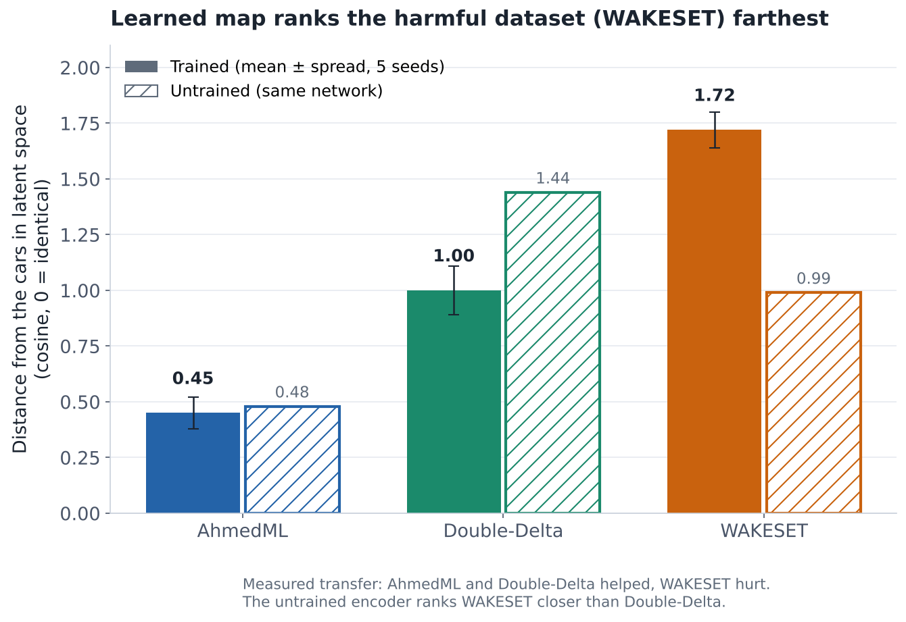
Distance from the cars in latent space (mean of 5 seeds). Trained encoder ranks WAKESET farthest; untrained does not.
A neural surrogate that reads a car's shape and predicts surface pressure and wall shear in seconds instead of hours of CFD.
Key result: about 17% relative error on surface pressure for unseen cars, in seconds.
Details
Problem
Each high-fidelity airflow simulation of a car takes hours to days, which slows design iteration.
Approach
Implemented an AB-UPT transformer in PyTorch, trained on DrivAerML. Built point-sampling and caching pipelines to make million-point meshes trainable.
Lesson
Accuracy drops on shapes unlike the training data. That gap motivated my research on pretraining across different flow datasets.
My role
Built the full pipeline, model and evaluation.
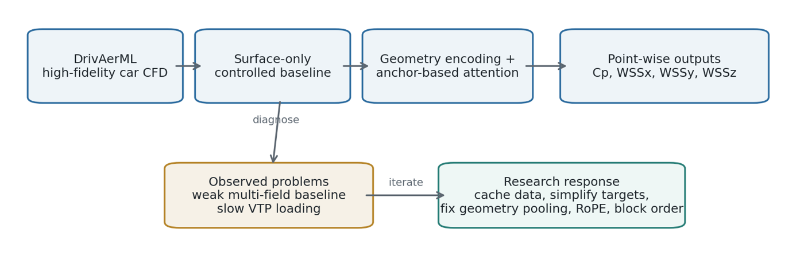
Research loop: a surface-only baseline exposed weak multi-field accuracy and slow data loading, which led to cached data, simplified targets, and fixes to geometry pooling, RoPE handling and block order.
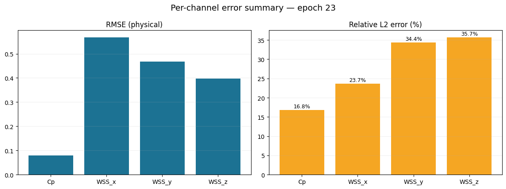
Per-channel test error: pressure (Cp) is the easiest target at about 17%; the transverse wall-shear components remain harder.
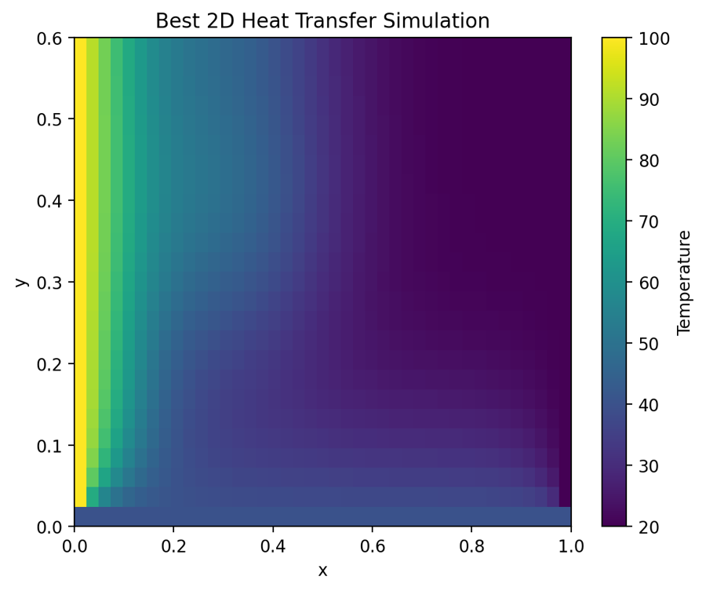
Temperature field of the best stable run the agent selected for the accurate case.
LLM Agent for 2D Heat-Transfer Simulation
Course project · AI Agents for Engineers (24-880) · Spring 2026
ReActQwen2.5-1.5BFinite differences
A small-language-model agent that sets up a transient heat-conduction solver from a plain-language prompt and tunes mesh size and time step for stability, error and runtime.
Details
Problem
Choosing mesh size and time step is trial and error that slows engineers down.
Approach
A ReAct loop proposes settings, runs the solver, and scores each run; the agent returns the best stable configuration.
Lesson
Even a small model can automate numerical choices when a scoring loop checks its work, an idea that shaped CFD Forge.
My role
Designed and built the agent, solver interface and scoring loop.
Education & Experience
Carnegie Mellon University
M.S. Mechanical Engineering (Research) · Expected May 2027
GPA 3.98 / 4.00
Pandit Deendayal Energy University
B.Tech. Mechanical Engineering · 2023
CPI 9.18 / 10 · Qualified GATE 2023
Experience
Feb 2026 – now
Graduate Research Assistant
Mechanical and AI Lab, Carnegie Mellon · Advisor: Prof. Amir Barati Farimani
Neural CFD surrogates, cross-domain pretraining for data-scarce CFD, and physics-checked AI agents for simulation (with Prof. Ryan F. Johnson).
Jun 2023 – Aug 2024
Executive Engineer
Honda Motorcycle & Scooter India, Power Train Division
Led a team of 20+ operators machining engine cylinder heads; used CMM inspection data to trace and eliminate a recurring defect behind ~3,000 rejected parts.
Jan – May 2023
Research Intern
Bhabha Atomic Research Centre, Electron Beam Centre
Thermal–structural FEA to optimize the titanium foil window of a 1 MeV electron accelerator; contributed to work presented at InPAC 2023.